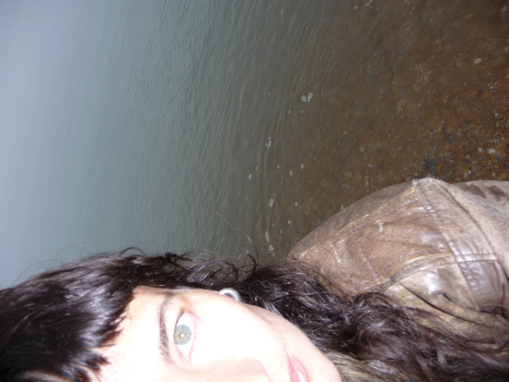
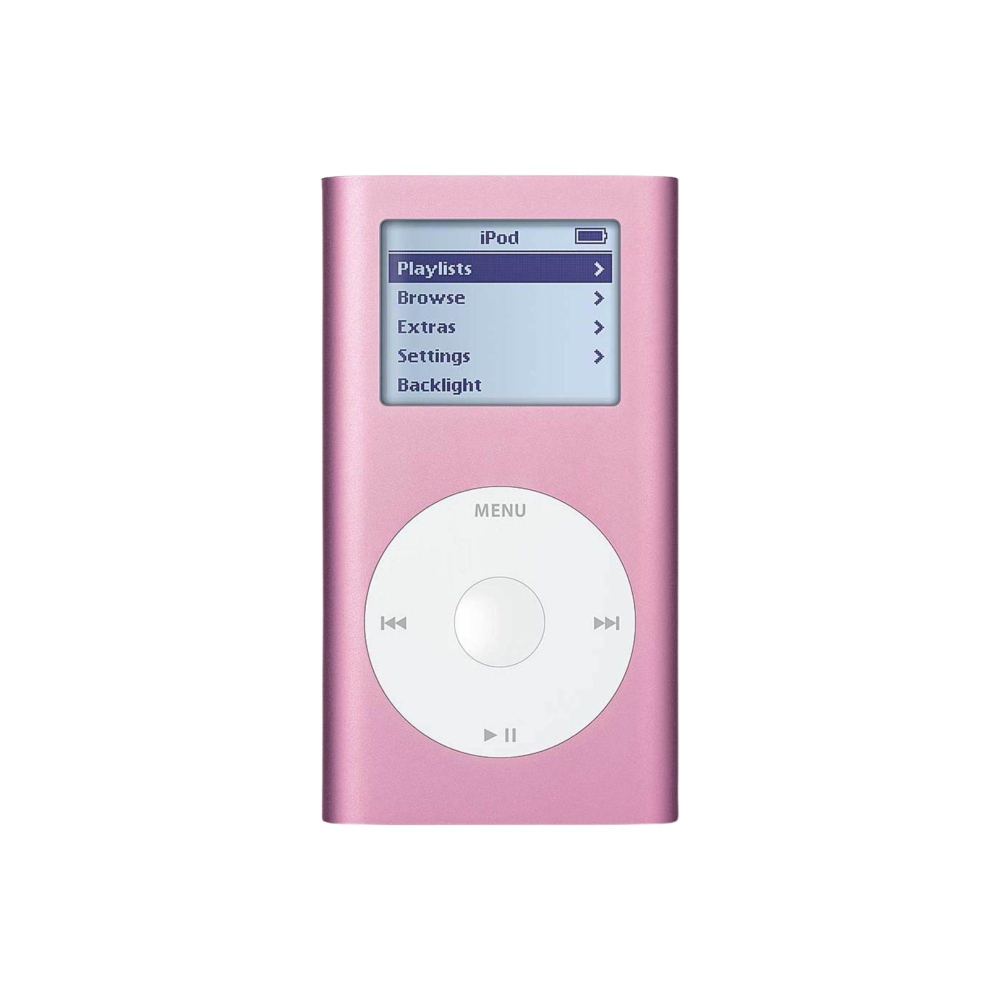

follow pink iPod on Instagram @pink.i.pod
Things I think people don’t write enough songs about:
The latter lack of videoessaypoetry song is exactly why I loved Cordelia Gartside’s last release, Laura Palmer. Turn on the sound on your phone while I tell you a story.
Who is Laura Palmer? And who killed her?
Laura Palmer is a character in the series Twin Peaks, created by Mark Frost et David Lynch. The show follows an FBI Agent as he investigates the murder of a young high school student, Laura Palmer (played by Sheryl Lee), in the fictional town of Twin Peaks. The series’ theme is an instrumental version of the song “Falling” from Julee Cruise’s 1989 album Floating into the Night, which was composed by Badalamenti and Lynch.
Laura Palmer, perfectly disciplined by femininity, eventually unfolds to embody all the layers of what patriarchy can inflict : thirst for perfection, pain, violence, trauma, silence.
While Twin Peaks focuses on the events after the death of Laura Palmer, its prequel, ‘Fire Walk with Me’ focuses on her life. That film infixed Cordelia until she had no choice but channel her vivid obsession somewhere.
Everything about this song has a taste of pre-existence. Not copy, rather the estranged familiarity you have when a voice lands so perfectly a delicate arrangement, it immediately feels yours.
The whole song is a deep breath of rage, until it eventually blooms, like a burning flower. The song embraces all its possibilities, until the guitar loop shifts from rage to peace. Three last simple lines conclude and honor the power of Palmer’s dual-sided persona; an unsimple victim and a powerful character.
The song feels big, bigger than Cordelia, bigger than Laura Palmer. It was ghostly and it occupied me the moment I listened to it. Cordelia was the perfect person to ask big questions to. This interview happened over instagram DMs, so I think it's only fair you read it as a sneak peek.
Pink iPod
What made you want to write a song about the show ? What specific aspect of Laura Palmer's character speaks to you ?
Cordelia Gartside
it was the film fire walk with me that made me write the song, and it didn’t feel like a choice actually - it hit me so hard & made me feel so much that the outlet was necessary
and there isn’t one specific aspect of laura that really catalysed that feeling. it’s hard to understand why i feel so strongly about her. she gets under the skin & a lot of that is bc of Sheryl lee’s acting, but also bc of how the character’s written. there’s clarity in her story, but there is also this open endedness & possibility that exists alongside the ultimate tragedy of her death. I guess she represents corporeality and transcendence, and that’s what i think a lot of people privately hope for for themselves
Pink iPod
Are you familiar with the concept of hauntology ?
Cordelia Gartside
woooa no but i love that word tell me more
Pink iPod
So hauntology is a concept developed by Derrida, French philosopher
He was reading Marx, and you know Marx says "there is a spectre haunting europe" talking about communism
and it inspired Derrida to talk about cultural, social and political objects from the past that haunt the present, in a way disrupt and blur the timeline between past and present
and it was reused by a lot of political theorists, including Mark Fisher who wrote a lot about music
it's a hard to pin down concept, but basically he tries to describe how our society is haunted by futures that failed to happen
Mark Fisher, he wrote many things but he has a book, and a chapter, about the slow cancellation of the future
Hauntology is the feeling that the present is haunted by futures that were promised in the past but never arrived, right ? Well basically Mark Fisher says that all the promises and imaginings of the future in the 20th century present in music (space age optimism etc) are still haunting the music we are making, basically he says we are incapable of completely innovating or breaking through like they did in the 60s, because the very idea of capitalism is to recycle cultural products and avoid disruption
(it's basically kind of a complicated word to say nostalgia of the unachieved futures)
My question thus is : what impossible future you were deprived of are you now haunted by ?
Cordelia Gartside
have you heard of anemoia?
Pink iPod
no !!
Cordelia Gartside
i don’t think i’m haunted by a particular future, but i do feel the sense of being haunted by atemporality. Anne Carson has a line i love: ‘i can feel that other day running under this one like an old videotape’. (hauntology!!)
that line encapsulates this feeling i often have of memory and possibility, future and past all changing and building themselves simultaneously. and when i pay attention or i’m in certain moods i can feel them shifting
i found the word ‘anemoia’, which means nostalgia for something you never experienced, about a year ago. that feels like a different aspect of hauntology, if I understand it right. i think i’m often haunted by unreality - fantasy, nostalgia, memory, im/possibility, but the things inside those things are almost never concrete enough to name
Pink iPod
I think you describe for the Line of Best Fit that the song was mostly about musical exploration, and creating this soundscape. Do you feel like it's almost as if the song already existed and you had to dig it out ? Almost as if it was already haunting you ? (you have everyright to tell me how wrong I am)
Cordelia Gartside
i experience production like writing the song over the song. i wrote laura palmer on an acoustic guitar - you could call that song 1. then when i started producing it i was writing song 2 - that’s where the musical exploration started. so laura is a combination of those two things, it’s not one or the other. they’re the same song but they’re also different. it’s making me think of hauntology again actually - the original is in the final version and maybe the final version was always in the original
which i guess is a way of agreeing that the song already existed. but WHICH SONG
Pink iPod
I guess both, as simultaneous futures
What would be your dream venue, any venue at all, does not have to be a venue it can be a space, to perform that song ? What instruments would you want there, what audience, what objects ?
Cordelia Gartside
a clearing in a forest at night time with a perfect sound system and a string section. and a massive symphonic gong. tvs stacked up around the stage with only footage of laura palmer. big clean spotlight on the stage and a smoke machine for vibes
audience would be David lynch, Jennifer lynch, Sheryl Lee, Laura obviously, Rhiannon who watched the show with me, owls, everyone who’s ever felt a lot about laura palmer

